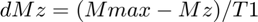
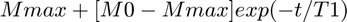
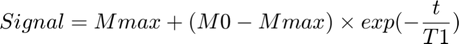
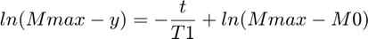
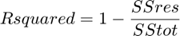

Fitting an Exponential to the Buildup of Polarisation
Contents
- Inputs
- Alternative Inputs
- Outputs
- Child Functions
- Verifying x and y Exist and are Valid
- Generating x and y if Invalid or Non-Existent Inputs
- Generating Arrays to Hold the Estimated Calculated Parameters
- Iterating Mmax to Find the Best Estimated Fit
- Calculating the Estimated Buildup Curve
- Calculated the Parameters for the Buildup Curve
- Notes
When a sample is undergoing DNP, using:

signal strength can be modelled as a function of:

Inputs
x: is a column vector containing the times each measurement was taken
y: is an array containing the signal strength at each time measured. Values for different peaks go in different columns
peaknames: is a cell containing the names of each NMR peak measured
titl: is the title of the scatter plot (character vector)
Alternative Inputs
sys: is 'Y' if the data was collected using the Alpha System or 'N' if the data was collected using the Hypersense
dat: depending on how the data was collected, dat is:
a cell containing the .txt output of AMARES (Alpha System)
a .csv output file using the custom integration output using counts and values comma delimited from MestReNova (Alpha System)
a .dat file outputted from using the Hypersense containing comma delimited data
proc: is the procpar file, which is used to find the times measured (Alpha System only)
inp: is 'A' if the data was processed with JMRUI AMARES or is 'M' if the data was processed using MestReNova (Alpha System only)
coilnum: if the data was processed using MestReNova, it is the number of coils used to collect the data
field: is a cell containing the names of the peaks from which data was collected if the data was processed using MestReNova
Outputs
T1: is the longitudinal relaxation constant that describes buildup of the signal to its equilibrium in the hyperpolariser magnet
Mmax: is the maxmimum signal strength achievable from the conditions used to hyperpolarise the sample
M0: is the signal strength at the start of the buildup. It is proportional to the polarisation of the sample at 1.5K rather than the polarisation achieved from the transfer of electron spin to the sample nuclei (_Mmax)
CODs: is a column vector containing the coefficients of determination describing how well the other calculated outputs fit the raw data, where the relationship is as follows:

Child Functions
checkYN: checks if an input is 'Y', 'y', 'N', 'n' or something else
alphaparse: parses data collected using the Alpha System and/or 300MHz Magnet into the x and y column vectors, so it can be analysed
isdatfile: checks if an input is a readible file
parsedat: parses data collected using the Hypersense into the x and y column vectors
function [T1,Mmax,M0,CODs,x,y] = BuildupParamCalc(x,y,sys,dat,proc,inp,coilnum,field)
boolxy = 1;
Verifying x and y Exist and are Valid
x and y must both be populated arrays that contain the same number of rows
if nargin < 2 boolxy = 0; elseif isempty(x) == 1 boolxy = 0; elseif isempty(y) == 1 boolxy = 0; elseif length(x) ~= length(y) boolxy = 0; end
Generating x and y if Invalid or Non-Existent Inputs
Depending on the system the data was collected on, the outputted raw data will be in a different format. If the data was collected using the Alpha System, alphaparse is suited to process the data. Otherwise, if the data was collected using the Hypersense, parsedat is better suited to process the data.
if boolxy == 0 prompt = 'Was the data collected on the Alpha System (Y) or the Hypersense (N)? (Y/N): '; if nargin < 3 sys = input(prompt,'s'); end sysbool = checkYN(sys); while sysbool == 0 sys = input('Please enter Y if the data was collected on the Alpha System or N if the data was collected on the Hypersense (Y/N): ','s'); sysbool = checkYN(sys); end if sysbool == 1 if nargin >= 8 [x,y] = alphaparse([],inp,'N',dat,coilnum,field,proc); elseif nargin >= 7 [x,y] = alphaparse([],inp,'N',dat,coilnum,[],proc); elseif nargin >= 6 [x,y] = alphaparse([],inp,'N',dat,[],[],proc); elseif nargin >= 7 [x,y] = alphaparse([],[],'N',dat,[],[],proc); elseif nargin >= 6 [x,y] = alphaparse([],[],'N',dat,[],[]); elseif nargin >= 5 [x,y] = alphaparse([],[],'N'); end elseif sysbool == 2 if nargin < 4 dat = input('Enter the .dat file containing the Buildup data: ','s'); end datbool = isdatfile(dat); while datbool == 0 dat = input('Error: Please enter a valid .dat file','s'); datbool = isdatfile(dat); end if datbool == 1 data = parsedat(dat); x = data(:,1); y = data(:,2); end end end
Generating Arrays to Hold the Estimated Calculated Parameters
Parameters are collected for each peak of data quantified from the raw buildup data. At this point, estimates are generated to be fed into the lsqcurvefit function
count = 1;
numpeak = length(y(1,:));
cod = zeros(1,numpeak);
eMmax = zeros(1,numpeak);
eM0 = zeros(1,numpeak);
mdl = cell(1,numpeak);
for el = 1:numpeak
eMmax(el) = max(y(:,el))*1.01;
end
Iterating Mmax to Find the Best Estimated Fit
The raw data is linearised using:

The fitlm function is then used to calculate the gradient and intercept of the linearised data. Mmax is iterated 100 times to minimise the coefficient of determination
while count < 100 yada = eMmax-y; yad = log(yada); for el = 1:numpeak mdl{el} = fitlm(x,yad(:,el)); codd = mdl{el}.Rsquared.Adjusted; if codd > cod cod(el) = codd; eMmax(el) = eMmax(el)*1.01; end end count = count+1; end
Calculating the Estimated Buildup Curve
From the linearised data, the estimated T1 is -1/gradient from the fit, while the estimated M0 is Mmax-intercept
eT1s = zeros(numpeak,1);
for el = 1:numpeak
T1ada = mdl{el}.Coefficients(2,1);
T1ad = table2array(T1ada);
eT1 = -1/T1ad;
eT1s(el) = eT1;
intada = mdl{el}.Coefficients(1,1);
intad = table2array(intada);
inta = exp(intad);
eM0(el) = eMmax(el)-inta;
end
Calculated the Parameters for the Buildup Curve
The estimated parameters are fed into lsqcurvefit to calcualte the buildup curve. The coefficient of determination is calculated using:

where SSres is the squared sum of the residuals between the model and raw data and SStot is the sample variance of the signal strength raw data multiplied by the number of points measured minus 1
f = @(xn,x)xn(1)+((xn(2)-xn(1))*exp(-x/xn(3)));
Mmax = zeros(numpeak,1);
M0 = zeros(numpeak,1);
T1 = zeros(numpeak,1);
CODs = zeros(numpeak,1);
for el = 1:numpeak
x0 = [eMmax(el) eM0(el) eT1s(el)];
lb = [0 0 0];
ub = [inf inf inf];
options = optimoptions('lsqcurvefit', ...
'MaxFunctionEvaluations', 3000,'TolFun',1e-9);
[xn,~,residual] = lsqcurvefit(f,x0,x,y(:,el),lb,ub,options);
sqresidual = residual.*residual;
SSres = sum(sqresidual);
Variance = var(y(:,el));
nums = length(x);
SStot = (nums-1)*Variance;
CODs(el) = 1-(SSres/SStot);
Mmax(el) = xn(1);
M0(el) = xn(2);
T1(el) = xn(3);
end
Local minimum possible. lsqcurvefit stopped because the final change in the sum of squares relative to its initial value is less than the value of the function tolerance.
end
T1 =
2.8290e+03
Mmax =
7.3413e+03
M0 =
3.4527e-09
CODs =
0.9618
x =
300
600
900
1200
1500
1800
2100
2400
2700
3000
3300
3600
3900
4200
y =
1.0e+03 *
0.0051
0.6040
1.7244
2.6963
3.3472
3.7616
4.0765
4.2891
4.5378
4.7641
5.0509
5.2612
5.4195
5.5210
Notes
The inputs used in the example are:
x: []
y: []
sys: 'Y'
dat: {'Buildup_1Pyr_28_11_19.txt'}
proc: 'procpar28_11_19'
inp: 'A'
The example was run by putting: [T1,Mmax,M0,CODs,x,y] = BuildupParamCalc([],[],'Y',{'Buildup_1Pyr_28_11_19.txt'},'procpar28_11_19','A')
into the command window